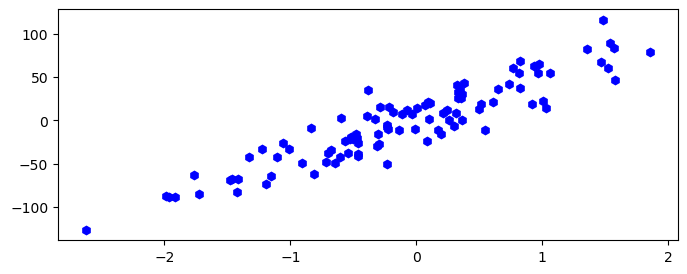
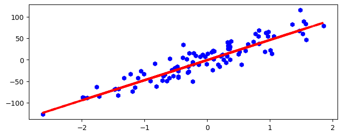
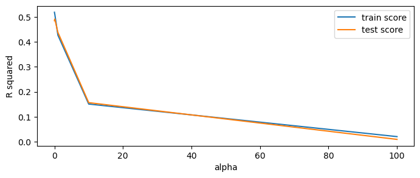
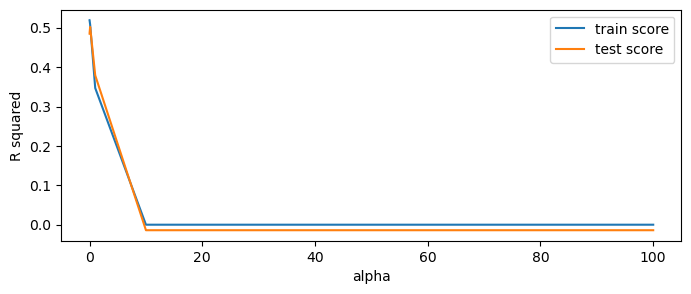
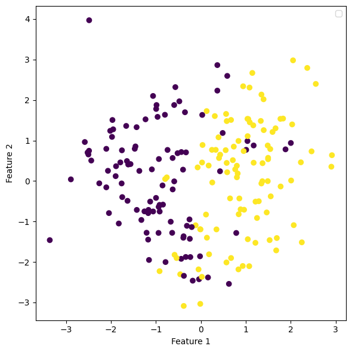
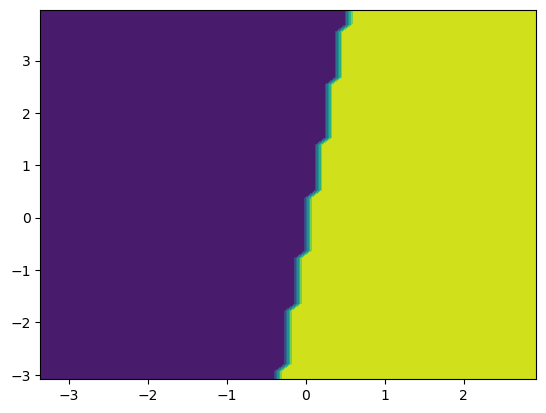
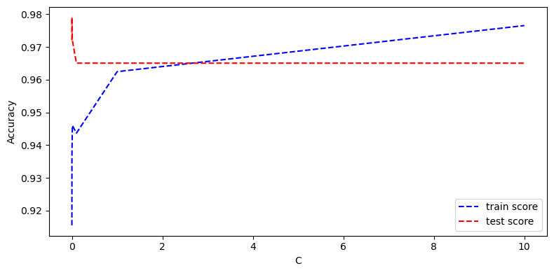
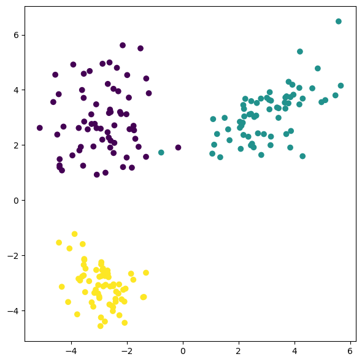
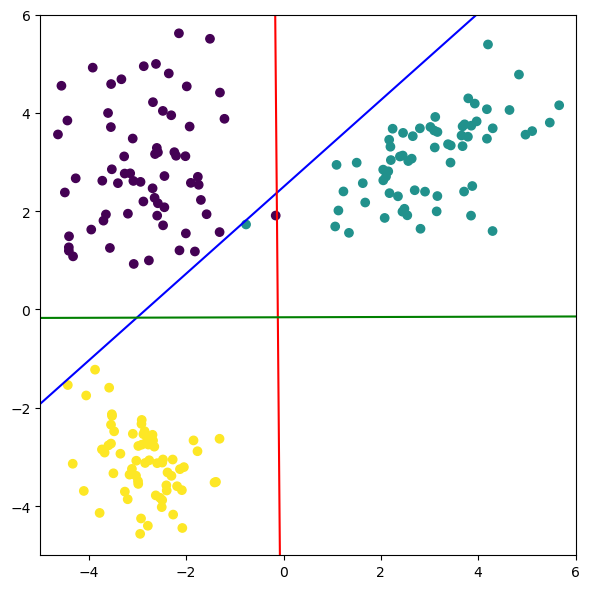
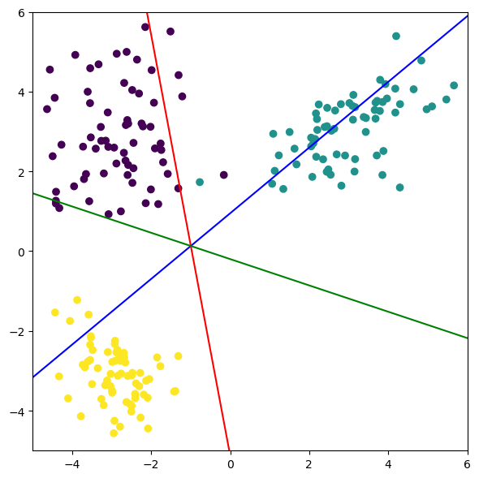

import warnings
warnings.filterwarnings("ignore", category=DeprecationWarning)6 Linear Models
6.1 Linear Models for Regression
In linear regression models, we assume the observed data follows the function form of
\[ \hat{f}(x_i) = \beta_0 + \beta_1 x_{i1} + \cdots + \beta_p x_{ip} + \epsilon_i \]
where \(\beta_0 \cdots \beta_p\) are the parameters to be estimated from observed data and \(\epsilon\) is the irreducible error term associated with observation \(x_i\). Note that we use \(p\) to denote the number of features in the dataset.
6.1.1 Linear regression
The Ordinary Least Squares (OLS) is the most commonly used objective function to estimate the \(\beta\) values. It is defined as
\[ \text{min.} \sum_{i = 1}^{n} (y_i - \hat{f}(x_i))^2 \]
where \(n\) is the number of training samples.
6.1.2 Ridge Regression
In ridge regression, a penalty term is added to the OLS to reduce the variation of \(\beta\). Specifically, the objective function is defined as
\[ \text{min.} \sum_{i = 1}^{n} (y_i - \hat{f}(x_i))^2 + \alpha \sum_{j = 1}^p \beta_j^2 \]
where \(\alpha\) is the hyperparameter that controls the extent to which we want to reduce the variance.
6.1.3 Lasso Regression
Similar to Ridge regression, Lasso regression aims to reduce the number of features. Mathematically, the objective function is defined as
\[ \text{min.} \sum_{i = 1}^{n} (y_i - \hat{f}(x_i))^2 + \alpha \sum_{j = 1}^p |\beta_j| \]
where \(\alpha\) is the hyperparameter that controls the extent to which we want to reduce the variance.
6.1.4 ElasticNet
Elastic-net considers both \(l_1\) and \(l_2\)-norm regularization in the objective function.
6.1.5 Datasets
6.1.5.1 A dummy dataset
from sklearn.datasets import make_regression
dummy_X, dummy_y = make_regression(n_samples=100, n_features=1, random_state=42, noise=20)import matplotlib.pyplot as plt
fig, ax = plt.subplots(1, 1, figsize=(8, 3))
ax.plot(dummy_X[:, 0], dummy_y, 'bh')
from sklearn.model_selection import train_test_split
dummy_X_train, dummy_X_test, dummy_y_train, dummy_y_test = train_test_split(dummy_X, dummy_y, random_state=42)from sklearn.linear_model import LinearRegression
lr = LinearRegression()
lr.fit(dummy_X_train, dummy_y_train)
print(f'coefficients: {lr.coef_}')
print(f'intercept: {lr.intercept_:.2f}')coefficients: [46.97069029]
intercept: -0.80import matplotlib.pyplot as plt
fig, ax = plt.subplots(1, 1, figsize=(8, 3))
ax.plot(dummy_X[:, 0], dummy_y, 'bh')
ax.plot(dummy_X_train, lr.predict(dummy_X_train), 'r--', linewidth=3)
print(f'train score: {lr.score(dummy_X_train, dummy_y_train):.2f}')
print(f'test score: {lr.score(dummy_X_test, dummy_y_test):.2f}')train score: 0.86
test score: 0.776.1.5.2 The Diabetes dataset
from sklearn.datasets import load_diabetes
diabetes = load_diabetes()import pandas as pd
df_diabetes = pd.DataFrame(data=diabetes['data'], columns=diabetes['feature_names'])
df_diabetes['target'] = diabetes['target']
df_diabetes.head()| age | sex | bmi | bp | s1 | s2 | s3 | s4 | s5 | s6 | target | |
|---|---|---|---|---|---|---|---|---|---|---|---|
| 0 | 0.038076 | 0.050680 | 0.061696 | 0.021872 | -0.044223 | -0.034821 | -0.043401 | -0.002592 | 0.019907 | -0.017646 | 151.0 |
| 1 | -0.001882 | -0.044642 | -0.051474 | -0.026328 | -0.008449 | -0.019163 | 0.074412 | -0.039493 | -0.068332 | -0.092204 | 75.0 |
| 2 | 0.085299 | 0.050680 | 0.044451 | -0.005670 | -0.045599 | -0.034194 | -0.032356 | -0.002592 | 0.002861 | -0.025930 | 141.0 |
| 3 | -0.089063 | -0.044642 | -0.011595 | -0.036656 | 0.012191 | 0.024991 | -0.036038 | 0.034309 | 0.022688 | -0.009362 | 206.0 |
| 4 | 0.005383 | -0.044642 | -0.036385 | 0.021872 | 0.003935 | 0.015596 | 0.008142 | -0.002592 | -0.031988 | -0.046641 | 135.0 |
diabetes_X_train, diabetes_X_test, diabetes_y_train, diabetes_y_test = train_test_split(diabetes['data'], diabetes['target'], random_state=42)6.1.6 Linear regression with scikit-learn
from sklearn.linear_model import LinearRegression
lr = LinearRegression()
lr.fit(diabetes_X_train, diabetes_y_train)LinearRegression()In a Jupyter environment, please rerun this cell to show the HTML representation or trust the notebook.
On GitHub, the HTML representation is unable to render, please try loading this page with nbviewer.org.
LinearRegression()
print(f'train score: {lr.score(diabetes_X_train, diabetes_y_train):.2f}')
print(f'test score: {lr.score(diabetes_X_test, diabetes_y_test):.2f}')train score: 0.52
test score: 0.486.1.7 Ridge regression with scikit-learn
from sklearn.linear_model import Ridge
ridge = Ridge()
ridge.fit(diabetes_X_train, diabetes_y_train)
print(f'train score: {ridge.score(diabetes_X_train, diabetes_y_train):.2f}')
print(f'test score: {ridge.score(diabetes_X_test, diabetes_y_test):.2f}')train score: 0.43
test score: 0.44from sklearn.linear_model import Ridge
import matplotlib.pyplot as plt
alpha_list = [0.0001, 0.001, 0.01, 0.1, 1.0, 10.0, 100.0]
train_scores, test_scores = [], []
for alpha in alpha_list:
ridge = Ridge(alpha=alpha)
ridge.fit(diabetes_X_train, diabetes_y_train)
train_scores.append(ridge.score(diabetes_X_train, diabetes_y_train))
test_scores.append(ridge.score(diabetes_X_test, diabetes_y_test))
fig, ax = plt.subplots(1, 1, figsize=(8, 3))
ax.plot(alpha_list, train_scores, label='train score')
ax.plot(alpha_list, test_scores, label='test score')
ax.set_xlabel('alpha')
ax.set_ylabel('R squared')
ax.legend()
plt.show()
6.1.8 Lasso regression with scikit-learn
from sklearn.linear_model import Lasso
lasso = Lasso()
lasso.fit(diabetes_X_train, diabetes_y_train)
print(f'train score: {lasso.score(diabetes_X_train, diabetes_y_train):.2f}')
print(f'test score: {lasso.score(diabetes_X_test, diabetes_y_test):.2f}')train score: 0.35
test score: 0.38from sklearn.linear_model import Lasso
import matplotlib.pyplot as plt
alpha_list = [0.0001, 0.001, 0.01, 0.1, 1.0, 10.0, 100.0]
train_scores, test_scores = [], []
for alpha in alpha_list:
lasso = Lasso(alpha=alpha)
lasso.fit(diabetes_X_train, diabetes_y_train)
train_scores.append(lasso.score(diabetes_X_train, diabetes_y_train))
test_scores.append(lasso.score(diabetes_X_test, diabetes_y_test))
fig, ax = plt.subplots(1, 1, figsize=(8, 3))
ax.plot(alpha_list, train_scores, label='train score')
ax.plot(alpha_list, test_scores, label='test score')
ax.set_xlabel('alpha')
ax.set_ylabel('R squared')
ax.legend()
plt.show()
6.1.9 ElasticNet with scikit-learn
from sklearn.linear_model import ElasticNet
elastic = ElasticNet()
elastic.fit(diabetes_X_train, diabetes_y_train)
print(f'train score: {elastic.score(diabetes_X_train, diabetes_y_train):.2f}')
print(f'test score: {elastic.score(diabetes_X_test, diabetes_y_test):.2f}')train score: 0.01
test score: -0.006.2 Linear Models for Classification
6.2.1 Datasets
6.2.2 Dummy classification dataset
from sklearn.datasets import make_classification
dummy_clf_X, dummy_clf_y = make_classification(n_samples=200, n_features=2, n_informative=2, n_redundant=0, n_classes=2, random_state=42)import matplotlib.pyplot as plt
fig, ax = plt.subplots(1, 1, figsize=(6, 6))
ax.scatter(dummy_clf_X[:, 0], dummy_clf_X[:, 1], c=dummy_clf_y)
ax.set_xlabel('Feature 1')
ax.set_ylabel('Feature 2')
fig.tight_layout()No artists with labels found to put in legend. Note that artists whose label start with an underscore are ignored when legend() is called with no argument.
6.2.3 The breast cancer dataset
from sklearn.datasets import load_breast_cancer
cancer = load_breast_cancer()6.2.4 Logistic regression with scikit-learn
import numpy as np
import matplotlib.pyplot as plt
from sklearn.inspection import DecisionBoundaryDisplay
from sklearn.linear_model import LogisticRegression
feature_1, feature_2 = np.meshgrid(
np.linspace(dummy_clf_X[:, 0].min(), dummy_clf_X[:, 0].max()),
np.linspace(dummy_clf_X[:, 1].min(), dummy_clf_X[:, 1].max())
)
grid = np.vstack([feature_1.ravel(), feature_2.ravel()]).T
clf = LogisticRegression()
clf.fit(dummy_clf_X, dummy_clf_y)
y_pred = np.reshape(clf.predict(grid), feature_1.shape)
display = DecisionBoundaryDisplay(xx0=feature_1, xx1=feature_2, response=y_pred)
display.plot()
from sklearn.datasets import load_breast_cancer
from sklearn.linear_model import LogisticRegression
from sklearn.model_selection import train_test_split
breast_X, breast_y = load_breast_cancer(return_X_y=True)
breast_train_X, breast_test_X, breast_train_y, breast_test_y = train_test_split(breast_X, breast_y, random_state=42)
clf = LogisticRegression(C=1.0, max_iter=10000)
clf.fit(breast_train_X, breast_train_y)
print(f'train score: {clf.score(breast_train_X, breast_train_y):.2f}')
print(f'test score: {clf.score(breast_test_X, breast_test_y):.2f}')train score: 0.96
test score: 0.97Explore the impact of the parameter C
from sklearn.datasets import load_breast_cancer
from sklearn.linear_model import LogisticRegression
from sklearn.model_selection import train_test_split
import matplotlib.pyplot as plt
breast_X, breast_y = load_breast_cancer(return_X_y=True)
breast_train_X, breast_test_X, breast_train_y, breast_test_y = train_test_split(breast_X, breast_y, random_state=42)
C_candidates = [0.0001, 0.001, 0.01, 0.1, 1.0, 10.0]
train_scores, test_scores = [], []
for C in C_candidates:
clf = LogisticRegression(C=C, max_iter=100000)
clf.fit(breast_train_X, breast_train_y)
train_scores.append(clf.score(breast_train_X, breast_train_y))
test_scores.append(clf.score(breast_test_X, breast_test_y))
fig, ax = plt.subplots(1, 1, figsize=(8, 4))
ax.plot(C_candidates, train_scores, 'b--', label='train score')
ax.plot(C_candidates, test_scores, 'r--', label='test score')
ax.set_xlabel('C')
ax.set_ylabel('Accuracy')
ax.legend()
fig.tight_layout()
6.2.5 Linear support vector machine with scikit-learn
import numpy as np
import matplotlib.pyplot as plt
from sklearn.inspection import DecisionBoundaryDisplay
from sklearn.svm import LinearSVC
feature_1, feature_2 = np.meshgrid(
np.linspace(dummy_clf_X[:, 0].min(), dummy_clf_X[:, 0].max()),
np.linspace(dummy_clf_X[:, 1].min(), dummy_clf_X[:, 1].max())
)
grid = np.vstack([feature_1.ravel(), feature_2.ravel()]).T
clf = LinearSVC()
clf.fit(dummy_clf_X, dummy_clf_y)
y_pred = np.reshape(clf.predict(grid), feature_1.shape)
display = DecisionBoundaryDisplay(xx0=feature_1, xx1=feature_2, response=y_pred)
display.plot()/opt/homebrew/anaconda3/envs/ml-notes/lib/python3.12/site-packages/sklearn/svm/_classes.py:31: FutureWarning: The default value of `dual` will change from `True` to `'auto'` in 1.5. Set the value of `dual` explicitly to suppress the warning.
warnings.warn(6.2.6 Multiclass classification
from sklearn.datasets import make_classification
dummy_multi_clf_X, dummy_multi_clf_y = make_classification(n_samples=200, n_features=2, n_informative=2, n_redundant=0, n_classes=3, n_clusters_per_class=1, class_sep=3, random_state=42)import matplotlib.pyplot as plt
fig, ax = plt.subplots(1, 1, figsize=(6, 6))
ax.scatter(dummy_multi_clf_X[:, 0], dummy_multi_clf_X[:, 1], c=dummy_multi_clf_y)
fig.tight_layout()
from sklearn.svm import LinearSVC
clf = LinearSVC(dual='auto')
clf.fit(dummy_multi_clf_X, dummy_multi_clf_y)LinearSVC(dual='auto')In a Jupyter environment, please rerun this cell to show the HTML representation or trust the notebook.
On GitHub, the HTML representation is unable to render, please try loading this page with nbviewer.org.
LinearSVC(dual='auto')
clf.coef_, clf.intercept_(array([[-0.74236851, 0.8409381 ],
[ 0.7269626 , 0.00635368],
[ 0.00214378, -0.79588124]]),
array([-2.09831008, 0.08652886, -0.1261963 ]))import matplotlib.pyplot as plt
fig, ax = plt.subplots(1, 1, figsize=(6, 6))
ax.scatter(dummy_multi_clf_X[:, 0], dummy_multi_clf_X[:, 1], c=dummy_multi_clf_y)
line = np.linspace(-5, 6)
for coef, intercept, color in zip(clf.coef_, clf.intercept_,
['b', 'r', 'g']):
ax.plot(line, -(line * coef[0] + intercept) / coef[1], c=color)
ax.set_xlim(-5, 6)
ax.set_ylim(-5, 6)
fig.tight_layout()
from sklearn.linear_model import LogisticRegression
clf = LogisticRegression()
clf.fit(dummy_multi_clf_X, dummy_multi_clf_y)LogisticRegression()In a Jupyter environment, please rerun this cell to show the HTML representation or trust the notebook.
On GitHub, the HTML representation is unable to render, please try loading this page with nbviewer.org.
LogisticRegression()
import matplotlib.pyplot as plt
fig, ax = plt.subplots(1, 1, figsize=(6, 6))
ax.scatter(dummy_multi_clf_X[:, 0], dummy_multi_clf_X[:, 1], c=dummy_multi_clf_y)
line = np.linspace(-5, 6)
for coef, intercept, color in zip(clf.coef_, clf.intercept_,
['b', 'r', 'g']):
ax.plot(line, -(line * coef[0] + intercept) / coef[1], c=color)
ax.set_xlim(-5, 6)
ax.set_ylim(-5, 6)
fig.tight_layout()